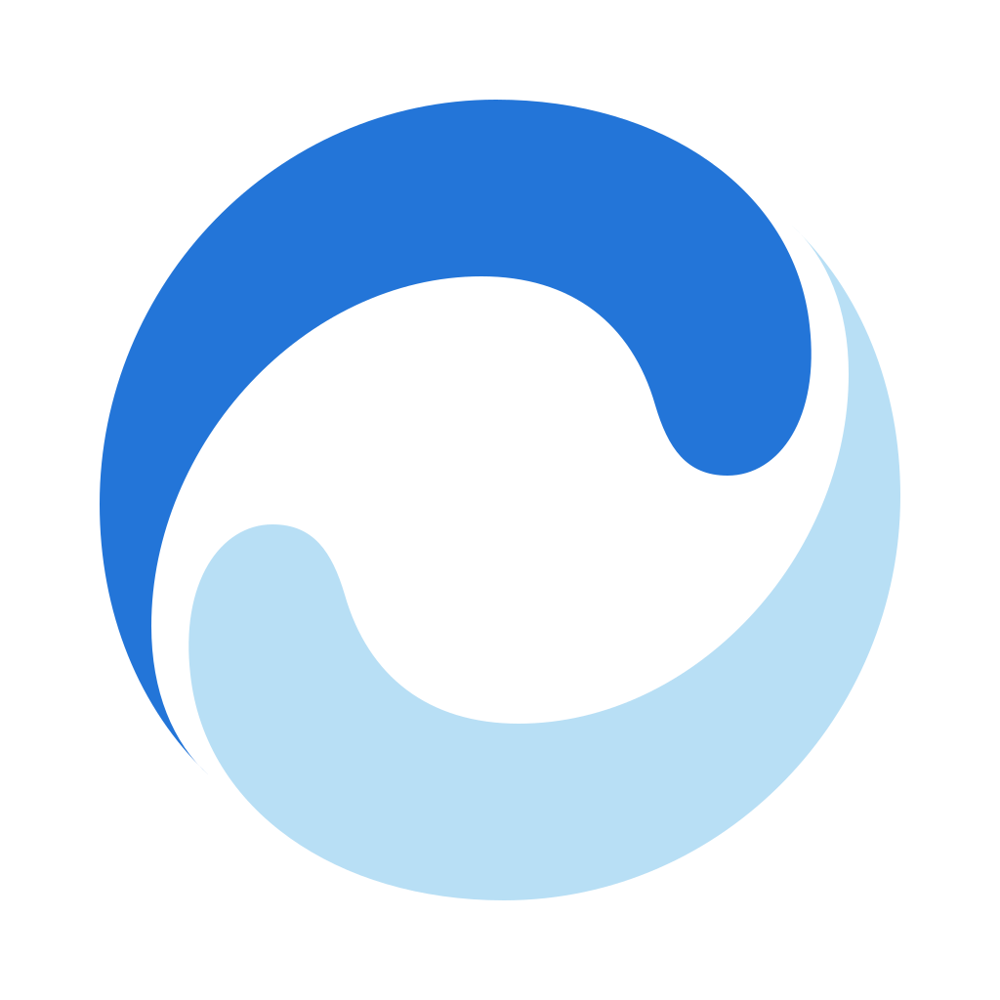

DSH Ocean
DeepSeek Harness desktop client
Starting
Connecting to DSH…
Looking for a running DeepSeek Harness server and its launch token.
runtime: detecting…
server: —
Startup log0 lines

DeepSeek Harness desktop client
Looking for a running DeepSeek Harness server and its launch token.